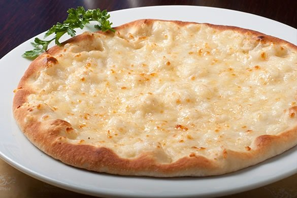

Jebne falls into the category of "Man'ooshe", which is a baked dough covered by a seasoning of your choice.
Jebne, which is arabic for cheese, is the main ingredient of this type of Man'ooshe, hence why it gets the name.
An image of a Jebne Man'ooshe
Remark: serving with cucumbers is optional.